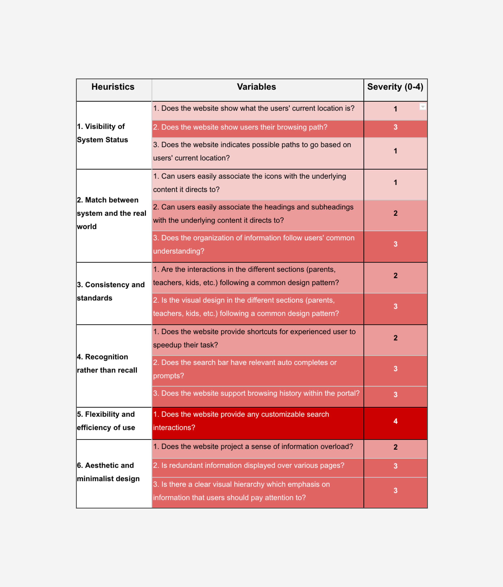

Recommendations for redesign were appreciated by the team and are already live on the website. Screenshots mentioned here are from February 2018.
Team Members: Mandy Shen and Shaung Cheng
During a three month internship at Nutanix, San Jose I had the opportunity to explore four enterprise UX projects at different phases of the design process. Apart from work, my weeks were packed with networking events, bootcamps, and intern outings. Here's a quick walkthrough of the highlights my first UX internship!
The Michigan eLibrary (MeL) is a statewide service of the Library of Michigan, an agency of the Michigan Department of Education.
UX Researcher
By the end of this three month long research project my team and I had collaboratively created six 2000 word reports, 5 slideshows, and a video summarizing our findings. My key contributions were on leading the analysis sessions, participating in creating detailed UX reports, and interviewing users.
Our task was to redesign the state e-library portal with librarians as the primary target audience.
WHY?
Librarians in Michigan are the face of MeL for major section of the society like the elderly and school students. They are aware of what the local community needs and hence looking closely at their experience with MeL can guide us towards insightful findings to improve overall usability.
Over the semester my team and I came up with detailed recommendations for redesign through 6 user experience research reports for the Mel.org team. We also provided a video summarizing the our process and findings.
MeL has a vast pool of resources. However, most librarians find it hard to navigate or find desirable information.
Provide contextual supportive information that is prominent to users on different pages. The information could be short videos or articles to education users the best way to use MeL.
Promotion and Training section is hard to navigate because resources are not organized the way users expect. Some sub sections have over 20 entries, while some have only one.
Clean up duplicated resources, categorize them by topic, and add a searchbar. Some possible headers could be: Tutorials, Workshop, and Promotion material. “Librarians love filters” : Provide filters to choose different types of resources like video/article/website.
The search function on Mel confuses users.
Visually emphasize the scope of different search bars, build a search function that searches the whole website, and remove the conflicting message on the promotion and training pages.
The diagram below shows the bird's eye view of our semester long research plan:
Following shortcuts will direct you to a visual representation of results from key methods used. The 2000 page reports were only for our dearest clients.
Shortcuts:
-
Interviews
WHY?
We wanted to learn more about our target audience and validate what kind of a redesign was really needed. We talked to 4 librarians with different job roles who work in rural libraries in Michigan.
-
Competetive Analysis
WHY?
To assess the functionalities and quality of MeL specific to librarians (from a user’s perspective instead of features) we selected six competitors.
-
Survey
WHY?
To investigate how effective the current sections on MeL are in supporting librarians and get input from a larger section of the target audience we sent out a survey to around 500 librarians in Michigan.
-
Heuristic Evaluation
WHY?
Before redesigning it was necessary to evaluate exisiting usability issues. With many heuristics available we decided to pick one of the most popular ones i.e. Nielsen's heuristic.

Some of the more data rich questions we asked:
A key insight from another question:
Regardless of how participants learned to use MeL, they have the most difficulties when using MeLCat, Database, and Promotion & Training section.
Our heuristic evaluation involved several steps: first we defined specific tasks and use cases. Next, we defined heuristics, variables and severity. Then, we evaluated heuristics individually and combined them into the following comprehensive table:
After a thorough UX research project I realized that applying multiple methods will not provide effecient results, we need to narrow down research goals and iteratively design methods around them.
What questions were raised and what methods would be a good fit to answer them?Sharing results with the client at multiple points provided the many opportunities for revision and helped build a good relationship with them.